State estimation
Kalman filtering
Modeled distance measurements and motor inputs to estimate robot state during fast motion.
ECE 4160 Fast Robots
A semester of embedded systems, sensing, controls, mapping, localization, and fast robot iteration, documented through weekly labs and a final inverted pendulum build.
Selected work
The portfolio follows a progression from board bring-up and sensor characterization to feedback control, probabilistic state estimation, and full robot behaviors.
Modeled distance measurements and motor inputs to estimate robot state during fast motion.
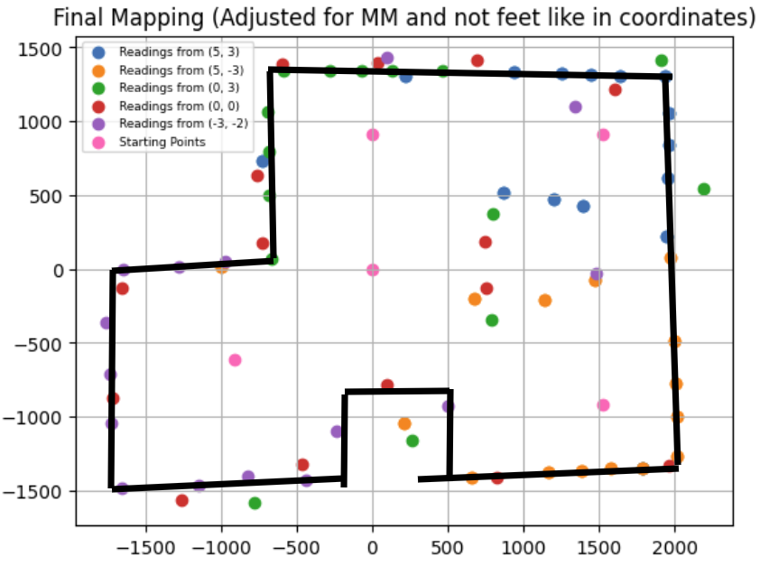
Converted scans into spatial maps and line features for later localization experiments.
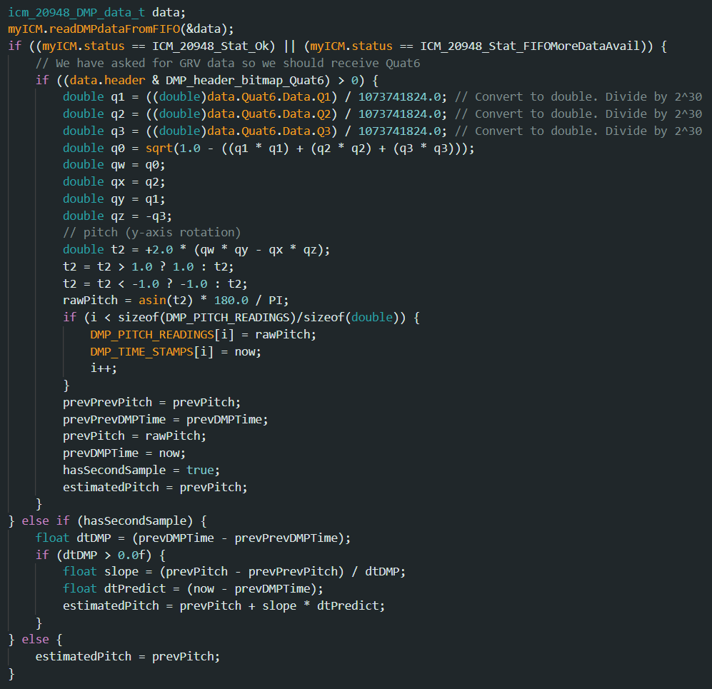
Tuned feedback behavior around IMU data, latency, motor limits, and physical constraints.
Complete archive
Each report includes setup notes, experiments, plots, code screenshots, videos, and reflections from the build process.
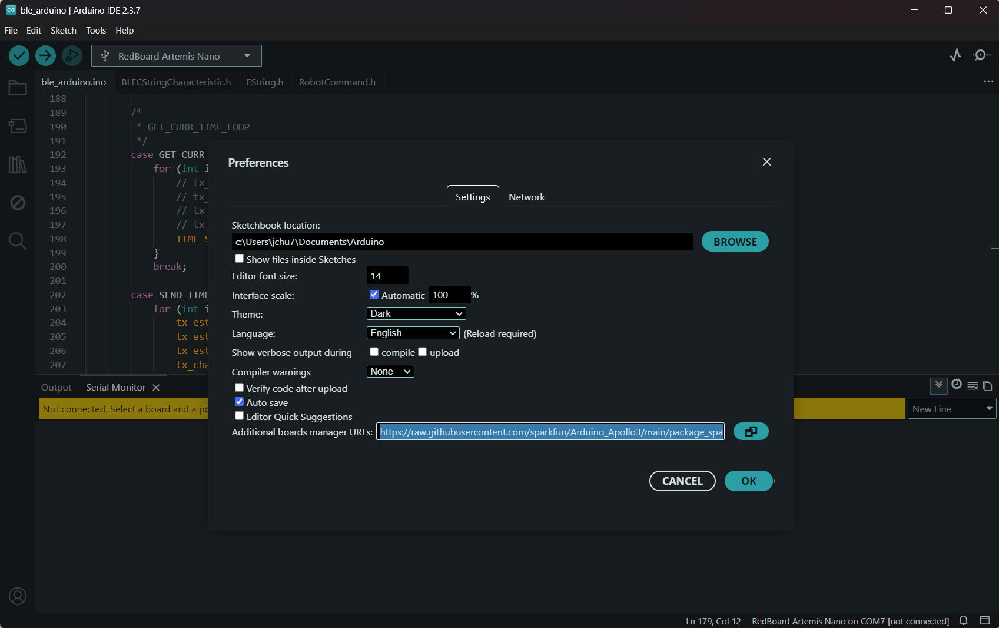
Board setup, BLE configuration, and command handling.
Lab 02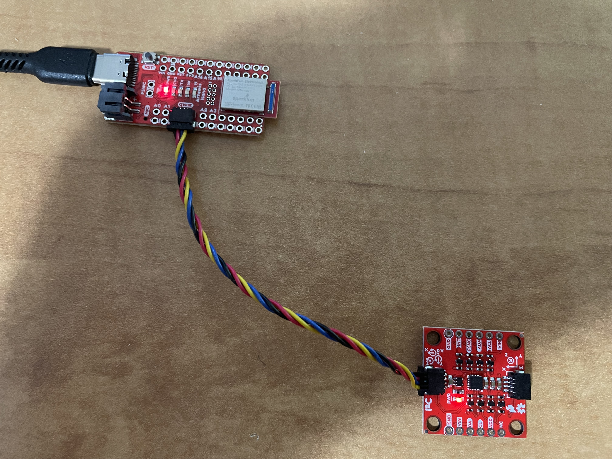
Accelerometer, gyroscope, filtering, and signal analysis.
Lab 03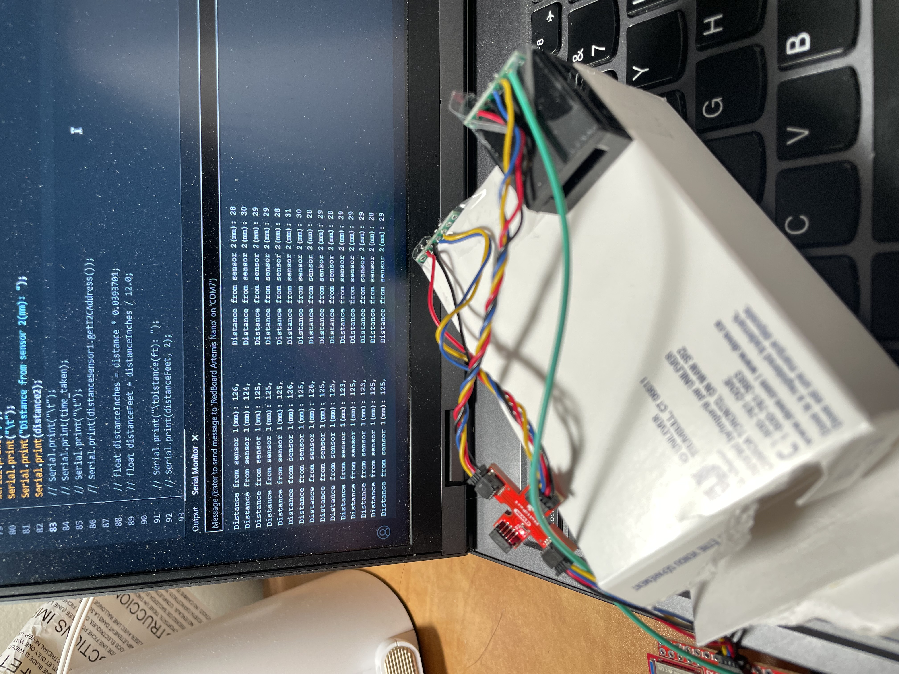
Sensor wiring, calibration, ranging, and sampling behavior.
Lab 04
Motor drivers, PWM outputs, wiring, and open-loop movement.
Lab 05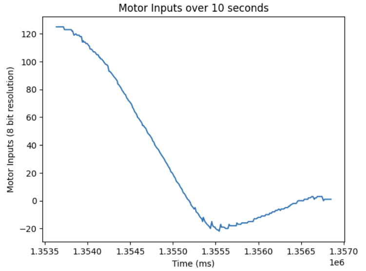
Closed-loop distance control and linear interpolation.
Lab 06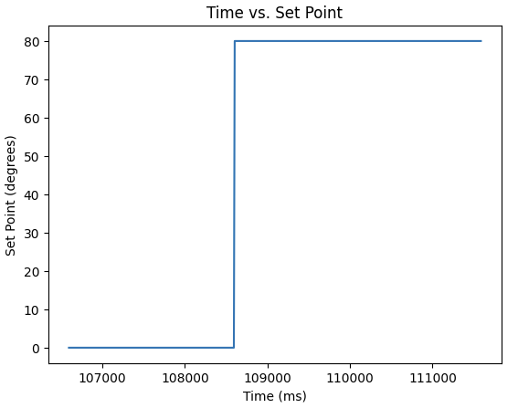
Yaw control, low-pass filtering, and PID tuning.
Lab 07State modeling, noise estimates, and fast distance estimation.
Lab 08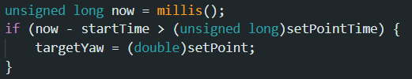
High-speed maneuvers, turn radius experiments, and tuning.
Lab 09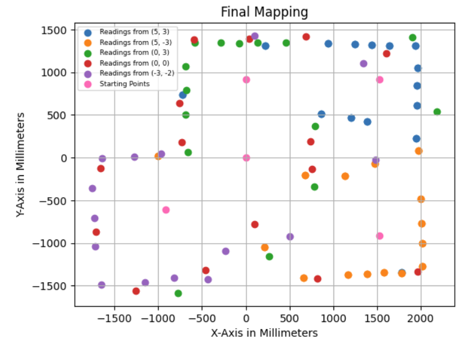
Coordinate transforms, polar scans, and map generation.
Lab 10
Bayes filtering and simulated pose belief updates.
Lab 11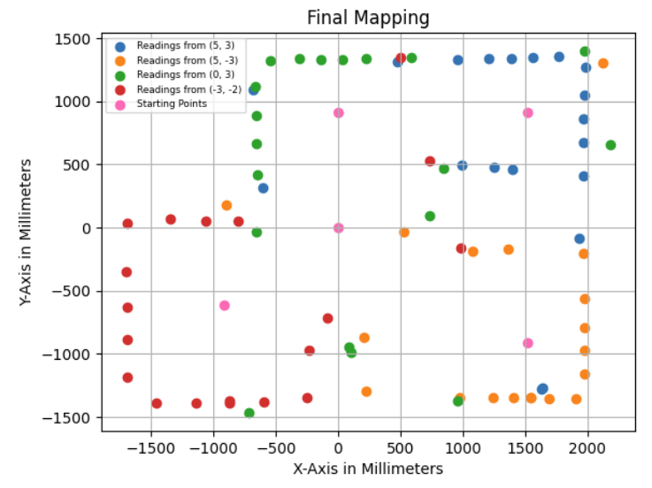
Real-world scans, observation loops, and pose estimation.
Lab 12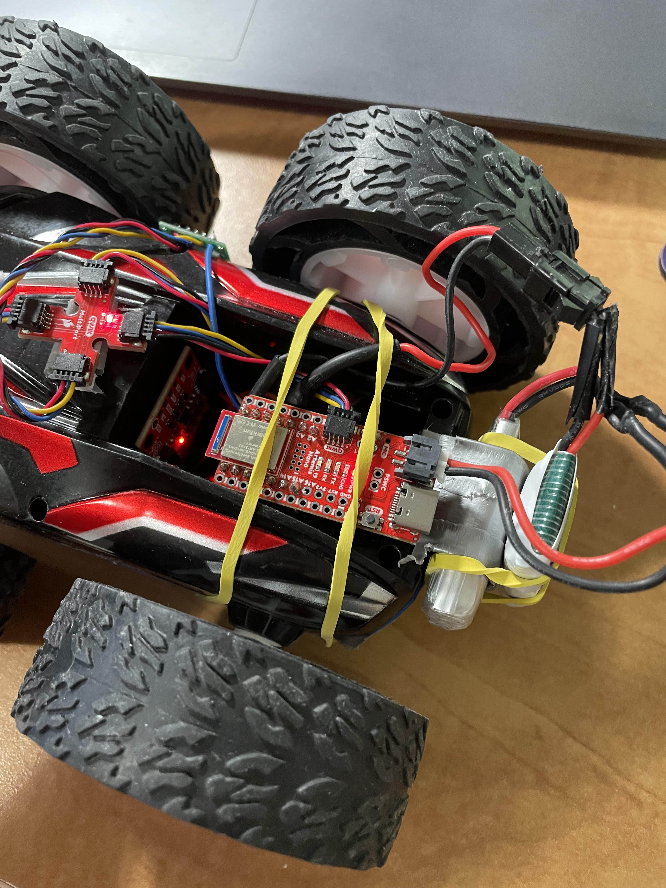
Balance control, latency reduction, and final robot behavior.